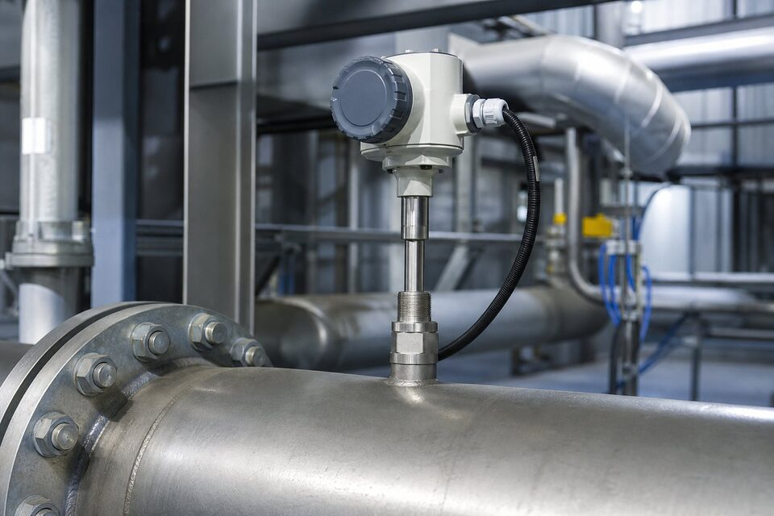

اصل اندازهگیری مستقیم جرم
در فلومتر حرارتی، دو سنسور دمایی در مسیر گاز قرار میگیرند: یکی دمای گاز را اندازهگیری میکند و دیگری به صورت کنترلشده گرم نگه داشته میشود. وقتی گاز جریان مییابد، حرارت از سنسور گرم به گاز منتقل میشود و مقدار انرژی لازم برای حفظ اختلاف دما، با دبی جرمی رابطه مستقیم دارد. چون اندازهگیری از ابتدا جرمی است، خوانش به تغییرات دما و فشار گاز وابسته نیست و نیازی به محاسبات جبران وجود ندارد؛ مزیتی که آن را برای هوا و گازهای فرایندی با شرایط متغیر بسیار جذاب میکند.

درونخط و درجی
دو پیکربندی اصلی وجود دارد. طرح درونخط برای سایزهای کوچک و رنجهای پایین استفاده میشود و کل جریان از داخل لوله اندازهگیری عبور میکند؛ دقت بالا و افت فشار کم از مزایای آن است. طرح درجی برای خطوط متوسط و بزرگ انتخاب میشود: سنسور از طریق یک اتصال وارد خط شده و سرعت گاز را در یک نقطه اندازهگیری میکند. این طرح برای خطوط بزرگ بسیار اقتصادیتر از فلومترهای کامل است و نصب آن نیز بدون توقف طولانی خط انجام میشود؛ البته پروفایل جریان باید مناسب باشد و عمق درج طبق دستورالعمل تنظیم گردد.
کاربردهای اصلی
- هوای فشرده: پایش مصرف و تخصیص هزینه در ایستگاهها.
- گازهای فرایندی: نیتروژن، دیاکسید کربن و آرگون.
- بیوگاز و گازهای کمفشار با رنج متغیر.
- هوادهی تصفیهخانهها و کنترل هوا.
- پایش نشتی و بالانس خطوط گاز.
محدودیتها و نکات انتخاب
چند محدودیت باید در انتخاب دیده شود. چون ضرایب اندازهگیری به خواص حرارتی گاز بستگی دارد، تغییر ترکیب گاز (مانند تغییر درصد رطوبت یا مخلوط) خوانش را تحت تاثیر قرار میدهد؛ در گازهای با ترکیب متغیر، این موضوع باید تحلیل شود. ذرات چسبنده و روغن نیز میتوانند روی سنسور بنشینند و دقت را کاهش دهند؛ در هوای فشرده روغنی، فیلتراسیون مناسب یا طرحهای مقاوم لازم است. در نهایت، عمق درج و محل نصب باید به دور از زانوها و آشفتگیها باشد تا پروفایل جریان، معرف دبی واقعی باشد.
نصب، کالیبراسیون و عیبیابی فلومتر حرارتی
فلومترهای حرارتی وقتی درست نصب شوند، سالها قرائت پایدار ارائه میدهند؛ اما چند نکته نصب و بهرهبرداری وجود دارد که نادیده گرفتن آنها مستقیما دقت را تحت تاثیر قرار میدهد. در نصب مدلهای درجی، عمق قرارگیری سنسور در لوله اهمیت دارد؛ سنسور باید متناسب قطر لوله در موقعیتی قرار گیرد که سرعت نماینده جریان را اندازه بگیرد و نقاط مرده نزدیک دیواره را نبیند. در مدلهای درونخط، جهت نصب و وضعیت لوله نسبت به طراحی سازنده باید رعایت شود. یکی از ویژگیهای مثبت این فناوری، نیاز کمتر به مقاطع مستقیم نسبت به برخی فناوریهای دیگر است، اما همچنان وجود فاصله مناسب از زانوییها، شیرها و منابع اغتشاش، پایداری قرائت را بهتر میکند. نکته مهم دیگر، تمیزی گاز است؛ ذرات معلق، روغن و رطوبت مایع در جریان گاز، روی سطح سنسور مینشینند و پاسخ آن را به تدریج کند و نامعتبر میکنند. در کاربردهایی که احتمال آلودگی گاز وجود دارد، فیلتراسیون مناسب در بالادست و بازرسی دورهای سنسور ضروری است. از نظر کالیبراسیون، این فلومترها معمولا برای گاز مشخصی کالیبره میشوند و اگر ترکیب گاز در طول زمان تغییر قابل توجهی کند، قرائت نیاز به تصحیح یا کالیبراسیون مجدد دارد؛ این موضوع را در کاربردهایی مانند گازهای زیستی یا مخلوطهای متغیر حتما در نظر بگیرید. در عیبیابی، چند علامت رایج وجود دارد: اگر قرائت در دبی صفر نیز مقدار غیرصفر نشان میدهد، آلودگی سنسور یا نفوذ رطوبت محتمل است؛ اگر پاسخ به تغییرات دبی کند شده است، انباشت رسوب روی عنصر حساس را بررسی کنید؛ و اگر قرائت ناپایدار است، اغتشاش شدید جریان یا مشکل تغذیه و زمین را کنترل نمایید. در نهایت، تغییر فشار خط را هم در نظر داشته باشید؛ در دبیهای خیلی پایین، تغییرات فشار میتواند بر قرائت جرمی اثر بگذارد.
جمعبندی
فلومتر حرارتی سادهترین راه برای اندازهگیری مستقیم جرم گاز است: بدون افت فشار محسوس، بدون جبرانسازی و با گزینه درجی اقتصادی برای خطوط بزرگ. با شناخت وابستگی آن به خواص گاز و نصب صحیح، این فناوری برای پایش هوا و گازهای فرایندی یکی از مقرونبهصرفهترین انتخابهاست.
سوالات رایج
فلومتر حرارتی چگونه کار میکند؟
یک سنسور گرمشده در جریان گاز قرار میگیرد؛ گاز با عبور، حرارت را از سنسور میگیرد و مقدار حرارت منتقلشده با دبی جرمی رابطه دارد. چون مستقیم جرم سنجیده میشود، نیازی به جبران دما و فشار نیست.
چرا برای گازها مناسب است و نه مایعات؟
انتقال حرارت در مایعات بسیار شدیدتر است و پایداری اندازهگیری را مختل میکند؛ این فناوری برای گازها بهینه شده و در هوای فشرده، گازهای فرایندی و بیوگاز به خوبی کار میکند.
مزیت اصلی نسبت به روشهای دیگر چیست؟
اندازهگیری مستقیم جرم بدون افت فشار محسوس و بدون نیاز به المان محدودکننده؛ به علاوه نصب درجی آن برای خطوط بزرگ بسیار اقتصادیتر از فلومترهای کامل است.
محدودیت اصلی آن چیست؟
وابستگی به خواص حرارتی گاز؛ اگر ترکیب گاز تغییر کند، ضرایب تغییر میکنند. در گازهای مرطوب یا دارای ذرات چسبنده نیز باید تمهیدهای مناسب در نظر گرفته شود.
مطالب مرتبط
با ذکر گاز، رنج دبی و سایز خط، فلومتر حرارتی متناسب از برندهای معتبر عرضه میشود.
مشاهده صفحه محصول ← ثبت RFQ همین محصولتامین این تجهیزات را به پیشرو تجهیز فرتاک بسپارید
شرکت پیشرو تجهیز فرتاک تامینکننده تخصصی تجهیزات صنعتی برای پروژههای نفت، گاز، پتروشیمی، فولاد و نیروگاهی است. برای دریافت پیشنهاد فنی و قیمت، استعلام (RFQ) خود را ثبت کنید تا کارشناسان مهندسی فروش در کوتاهترین زمان پاسخ دهند.
- تامین ابزار دقیقترانسمیترها و آنالایزرهای برندهای معتبر
- تامین تجهیزات صنایع نفت و گازپکیج مواد مطابق وندورلیست